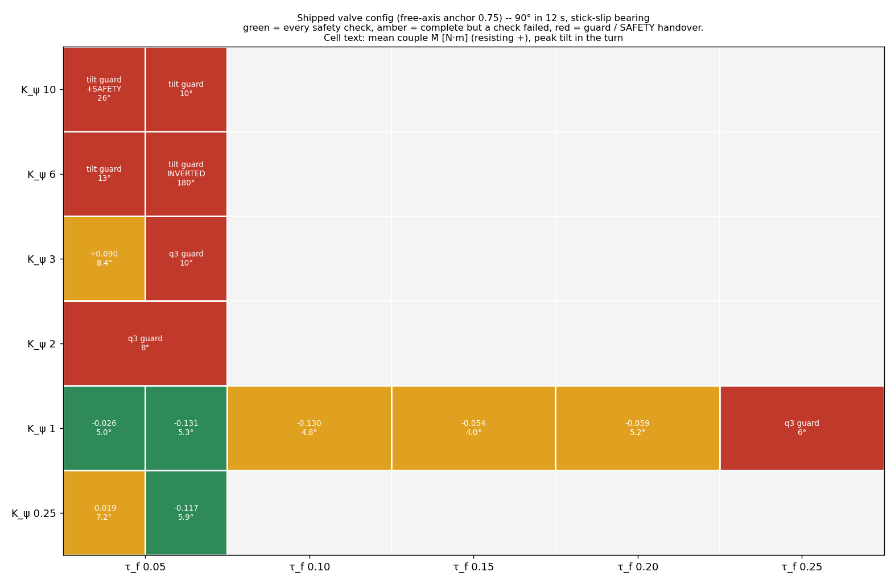
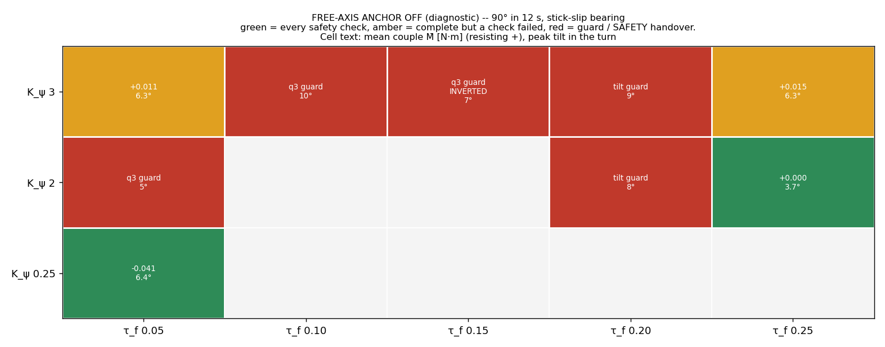
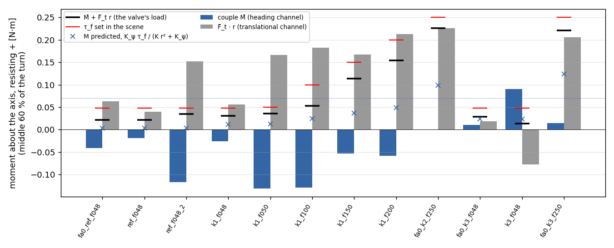
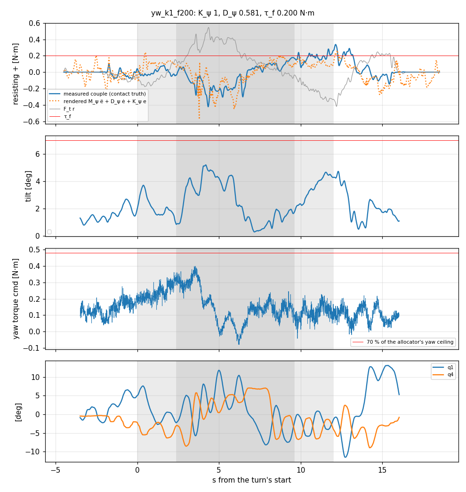
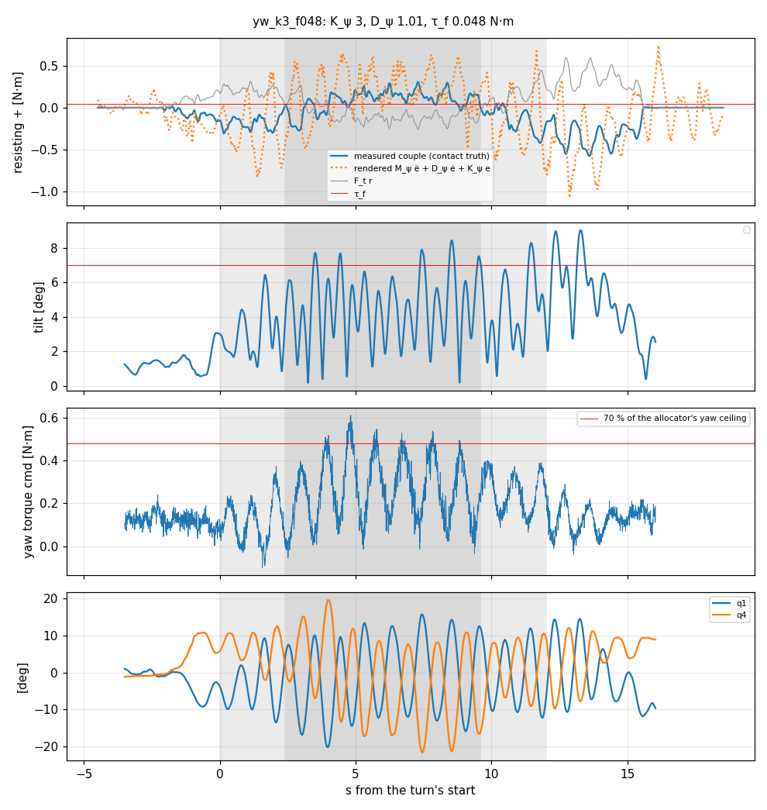

Can a 90° valve turn in 12 s, with a stiffer heading impedance and more valve friction, make the end-effector impedance's heading (torque) channel show clearly, and at which friction should the rubber pads be cut? The sweep crossed the heading stiffness Kψ 0.25–10 N·m/rad with valve friction τf 0.05–0.25 N·m.
No safe cell made the heading couple visible.
The plan's test was a mean couple of at least 0.07 N·m resisting the turn and at least twice its spread; no run passed it. The best mean was +0.09 N·m ± 0.12, in a Kψ 3 run that broke three safety checks. There is no lookup table and no pad target to give.
The claw twists on the fin, so the grasp, not Kψ, sets the couple.
In every turn the claw's heading moved 10–45° relative to the beam. The grip's torsional stiffness about the vertical was 0.1–0.8 N·m/rad, below every Kψ tried and below the tangential channel's K·r² = 3.07 N·m/rad.
Kψ ≥ 2 aborts even at the lowest friction.
A stiffer heading channel drives the ~1 Hz q1/q4 swing into the platform's yaw. Its frequency rose from 0.92 to 1.23 Hz, the yaw torque reached 78–112 % of the free budget, and four aborts ended with q3 buckled or the vehicle inverted. Kψ 1 was the one stiffer gain that flew clean, and slightly better than today's 0.25.
The scene's valve friction could not hold the valve; a stick-slip model now can.
At 0.9 τf the old model crept at 8–20 °/s, and it never delivered more than ~0.65 N·m per rad/s. The new PEGASUS_VALVE_FRICTION_MODEL=drive holds still at 0.9 τf and slips at 1.1 τf. It is off by default, and every run here used it.
Every flight is the shipped valve-turning mission, changed only where the plan asked:
Only two things changed from run to run:
A diagnostic column also turned off the free-axis anchor, a controller option shipped on 10-22 (rows tagged “anchor off”).
Before any flight, the valve alone took a constant torque below and above its friction (pre-check 1). The scene's original friction model failed this check.
| Model | τf | 0.9 τf (must stay put) | 1.1 τf (must turn) | At rest |
|---|---|---|---|---|
| tanh, explicit (the old default) | 0.10 | creeps 8.0 °/s | 3.85 rad/s² (Coulomb 3.89) | still |
| tanh, explicit | 0.25 | creeps 20.1 °/s | 9.61 (9.73) | still |
| stick-slip joint drive (used) | 0.10 | 0.03° in 6 s | 3.84 (3.89) | still, no jitter |
| stick-slip joint drive (used) | 0.25 | 0.08° in 6 s | 9.57 (9.73) | still, no jitter |
In flight the new model checks out about the bearing axis. While the valve slides, the couple plus the tangential force's moment, M + Ft·r, sits on τf (figure 3).


| Run | Anchor | Kψ | τf | Outcome | Tilt | Yaw τ | q3 min | Turned | M̄ ± σ | F̄t r | Share meas / pred |
|---|---|---|---|---|---|---|---|---|---|---|---|
| ref_f048 | 0.75 | 0.248 | 0.048 | complete, tilt>7 | 7.2° | 63 % | 21.7° | 87.7° | -0.019 ± 0.078 | +0.040 | -0.88 / 0.07 |
| ref_f048_2 | 0.75 | 0.248 | 0.048 | all checks | 5.9° | 67 % | 23.8° | 90.8° | -0.117 ± 0.063 | +0.152 | -3.38 / 0.07 |
| k1_f048 | 0.75 | 1 | 0.048 | all checks | 5.0° | 49 % | 22.5° | 87.2° | -0.026 ± 0.056 | +0.056 | -0.86 / 0.25 |
| k1_f050 | 0.75 | 1 | 0.050 | all checks | 5.3° | 54 % | 18.7° | 89.4° | -0.131 ± 0.077 | +0.167 | -3.64 / 0.25 |
| k1_f100 | 0.75 | 1 | 0.100 | complete, q1 growing, q4 growing, eps>80mm, turned<85 | 4.8° | 56 % | 9.7° | 83.4° | -0.130 ± 0.111 | +0.182 | -2.46 / 0.25 |
| k1_f150 | 0.75 | 1 | 0.150 | complete, q4 growing, turned<85 | 4.0° | 58 % | 15.1° | 83.6° | -0.054 ± 0.077 | +0.167 | -0.47 / 0.25 |
| k1_f200 | 0.75 | 1 | 0.200 | complete, q4 growing, on stop>10%, q3<5, eps>80mm, turned<85 | 5.2° | 58 % | 3.0° | 80.8° | -0.059 ± 0.141 | +0.213 | -0.38 / 0.25 |
| k1_f250 | 0.75 | 1 | 0.250 | q3 guard | 5.5° | 54 % | 10.4° | 90.6° | +0.025 ± 0.097 | +0.117 | — |
| k2_f048 | 0.75 | 2 | 0.048 | q3 guard | 8.0° | 76 % | 7.3° | 83.0° | -0.187 ± 0.194 | +0.204 | — |
| k3_f048 | 0.75 | 3 | 0.048 | complete, tilt>7, yaw torque>70%, q1 std>1.3x ref, q4 std>1.3x ref, q3<5 | 8.4° | 89 % | 4.2° | 97.1° | +0.090 ± 0.119 | -0.077 | +6.85 / 0.49 |
| k3_f048_2 | 0.75 | 3 | 0.048 | q3 guard | 9.8° | 78 % | 1.4° | 76.8° | -0.040 ± 0.185 | +0.054 | — |
| k6_f048 | 0.75 | 6 | 0.048 | tilt guard | 13.1° | 84 % | 14.9° | 93.4° | -0.015 ± 0.182 | +0.026 | — |
| k6_f048_2 | 0.75 | 6 | 0.048 | tilt guard (ended inverted) | inverted | 112 % | -26.1° | 3.4° | -0.068 ± 0.394 | +0.977 | — |
| k10_f048 | 0.75 | 10 | 0.048 | tilt guard + SAFETY handover | 26.2° | 76 % | 26.1° | -132.6° | +0.005 ± 0.036 | -0.182 | — |
| k10_f048_2 | 0.75 | 10 | 0.048 | tilt guard | 10.4° | 87 % | -4.0° | 0.1° | +0.000 ± 0.003 | +0.005 | — |
| fa0_ref_f048 | off | 0.248 | 0.048 | all checks | 6.4° | 55 % | 16.3° | 89.6° | -0.041 ± 0.112 | +0.063 | -1.87 / 0.07 |
| fa0_k2_f048 | off | 2 | 0.048 | q3 guard | 5.4° | 57 % | 16.0° | 90.2° | -0.007 ± 0.063 | +0.034 | — |
| fa0_k2_f200 | off | 2 | 0.200 | tilt guard | 7.8° | 76 % | 4.5° | 88.0° | -0.033 ± 0.086 | +0.192 | — |
| fa0_k2_f250 | off | 2 | 0.250 | all checks | 3.7° | 35 % | 19.9° | 87.0° | +0.000 ± 0.059 | +0.226 | +0.00 / 0.39 |
| fa0_k3_f048 | off | 3 | 0.048 | complete, yaw torque>70%, q4 growing | 6.3° | 79 % | 16.0° | 92.3° | +0.011 ± 0.083 | +0.018 | +0.37 / 0.49 |
| fa0_k3_f100 | off | 3 | 0.100 | q3 guard | 9.7° | 97 % | -18.8° | 23.5° | -0.019 ± 0.063 | +0.024 | — |
| fa0_k3_f150 | off | 3 | 0.150 | q3 guard (ended inverted) | 7.1° | 164 % | -88.7° | 90.2° | -0.027 ± 0.058 | +0.155 | — |
| fa0_k3_f200 | off | 3 | 0.200 | tilt guard | 9.3° | 97 % | 14.8° | 94.5° | +0.016 ± 0.109 | +0.103 | — |
| fa0_k3_f250 | off | 3 | 0.250 | complete, q4 std>1.3x ref, q4 growing, q3<5 | 6.3° | 62 % | 4.2° | 88.0° | +0.015 ± 0.054 | +0.206 | +0.07 / 0.49 |

The valve only fixes the sum of the two moments about its axis. The plan assumed the claw sits rigidly on the fin, which would make the split Kψ/(K r² + Kψ). It does not sit rigidly.


Record: docs/docs_aerial_manipulator/archive/valve_yaw_sweep_20261026/ (README, scores, figures, chains, scorer, MATLAB export of five representative runs). Runs: archive/valve_turning_20261015/runs/yw_*.